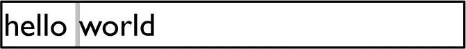
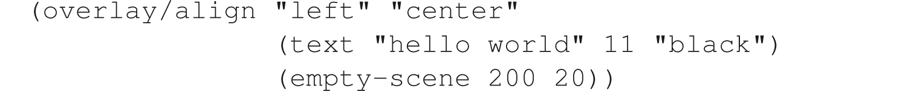

5.10 A Graphical Editor
To program in BSL, you open DrRacket, type on the keyboard, and watch text appear. Pressing the left arrow on the keyboard moves the cursor to the left; pressing the backspace (or delete) key erases a single letter to the left of the cursor—if there is a letter to start with.
This process is called “editing,” though its precise name should be “text editing of programs” because we will use “editing” for a more demanding task than typing on a keyboard. When you write and revise other kinds of documents, say, an English assignment, you are likely to use other software applications, called word processors, though computer scientists dub all of them editors or even graphical editors.
You are now in a position to design a world program that acts as a one-line editor for plain text. Editing here includes entering letters and somehow changing the already existing text, including the deletion and the insertion of letters. This implies some notion of position within the text. People call this position a cursor; most graphical editors display it in such a way that it can easily be spotted.
Take a look at the following editor configuration:
Someone might have entered the text “helloworld” and hit the left arrow key five times, causing the cursor to move from the end of the text to the position between “o” and “w.” Pressing the space bar would now cause the editor to change its display as follows:

In short, the action inserts “” and places the cursor between it and “w.”
Given this much, an editor must track two pieces of information:
1. the text entered so far, and
2. the current location of the cursor.
And this suggests a structure type with two fields.
We can imagine several different ways of going from the information to data and back. For example, one field in the structure may contain the entire text entered, and the other the number of characters between the first character (counting from the left) and the cursor. Another data representation is to use two strings in the two fields: the part of the text to the left of the cursor and the part of the text to its right. Here is our preferred approach to representing the state of an editor:
(define-struct editor [pre post])
; An Editor is a structure:
; (make-editor String String)
; interpretation (make-editor s t) describes an editor
; whose visible text is (string-append s t) with
; the cursor displayed between s and t
Solve the next few exercises based on this data representation.
Exercise 83. Design the function render, which consumes an Editor and produces an image.
The purpose of the function is to render the text within an empty scene of 200 × 20 pixels. For the cursor, use a 1 × 20 red rectangle and for the strings, black text of size 16.
Develop the image for a sample string in DrRacket’s interactions area. We started with this expression:

You may wish to read up on beside, above, and such functions. When you are happy with the looks of the image, use the expression as a test and as a guide to the design of render. 
Exercise 84. Design edit. The function consumes two inputs, an editor ed and a KeyEvent ke, and it produces another editor. Its task is to add a single-character KeyEvent ke to the end of the pre field of ed, unless ke denotes the backspace ("\b") key. In that case, it deletes the character immediately to the left of the cursor (if there are any). The function ignores the tab key ("\t") and the return key ("\r").
The function pays attention to only two KeyEvents longer than one letter: "left" and "right". The left arrow moves the cursor one character to the left (if any), and the right arrow moves it one character to the right (if any). All other such KeyEvents are ignored.
Develop a goodly number of examples for edit, paying attention to special cases. When we solved this exercise, we created 20 examples and turned all of them into tests.
Hint Think of this function as consuming KeyEvents, a collection that is specified as an enumeration. It uses auxiliary functions to deal with the Editor structure. Keep a wish list handy; you will need to design additional functions for most of these auxiliary functions, such as string-first, string-rest, string-last, and string-remove-last. If you haven’t done so, solve the exercises in chapter 2.1.
Exercise 85. Define the function run. Given the pre field of an editor, it launches an interactive editor, using render and edit from the preceding two exercises for the to-draw and on-key clauses, respectively.
Exercise 86. Notice that if you type a lot, your editor program does not display all of the text. Instead the text is cut off at the right margin. Modify your function edit from exercise 84 so that it ignores a keystroke if adding it to the end of the pre field would mean the rendered text is too wide for your canvas.
Exercise 87. Develop a data representation for an editor based on our first idea, using a string and an index. Then solve the preceding exercises again. Retrace the design recipe. Hint if you haven’t done so, solve the exercises in chapter 2.1.
Note on Design Choices The exercise is a first study of making design choices. It shows that the very first design choice concerns the data representation. Making the right choice requires planning ahead and weighing the complexity of each. Of course, getting good at this is a question of gaining experience.